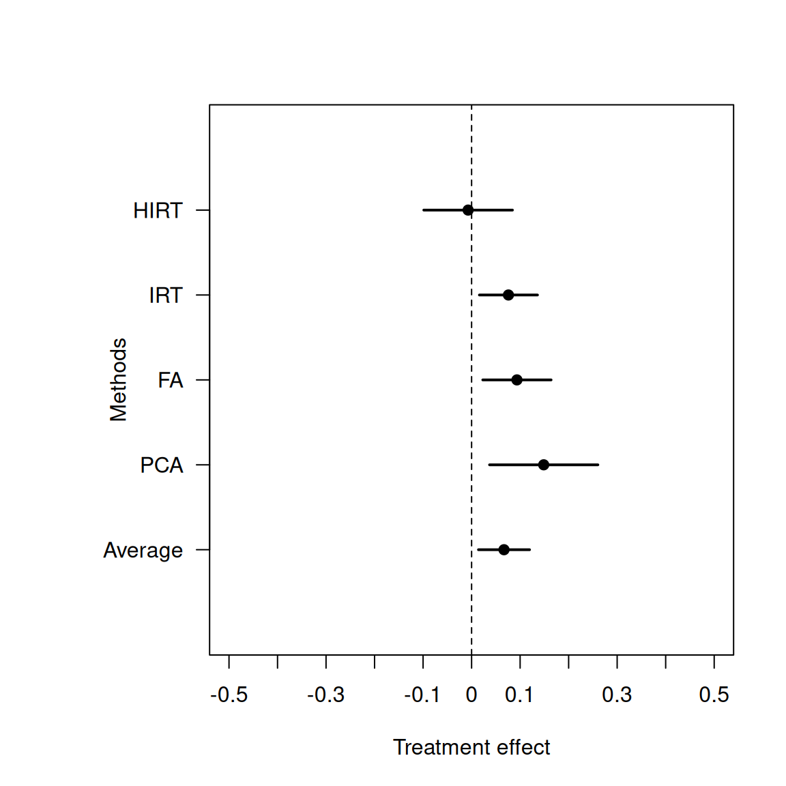

An index is a variable where multiple other variables are aggregated to measure one concept. Researchers often combine multiple observable indicators to measure concepts that are not directly observable, such as attitudes, perceptions, and beliefs. Rather than forcing one indicator to measure the concept, using multiple indicators can represent the concept more accurately and can reduce variation in the variable, thereby increasing its reliability as a measure.
Examples of such measures include both established measures and researcher-defined measures. Established measures include personality traits, such as right-wing authoritarianism and narcissism, and they have established sets of questions [@altemeyer1988enemies; @raskin1988principal]. Other concepts do not have an established set of indicators to measure them, and thus researchers need to choose which observable indicators to use and how to combine them. There are many aggregation methods, such as simple and weighted averages, principle component analysis (PCA), factor analysis, and item response theory (IRT) methods, and they have different advantages and disadvantages. Researchers need to choose which method to use depending on the context and the purpose of the study.
2 2. Why are indices important?
Indices help researchers to measure concepts that are not directly observable by using multiple observable indicators of those concepts. When researchers conduct survey and field experiments, they are typically interested in how treatments affect outcomes. While treatments are often easily measured because researchers have complete control over them in most experimental setups, measuring outcomes can be challenging. Many outcomes of interest to political scientists and policymakers are are not directly observable.
For example, [@margalit2021markets] study the effect of investment experience on socioeconomic values, and they measure socioeconomic values by combining respondents’ agreement with statements such as “economic positions are legitimate reflections of people’s achievements” and “there are no inherent differences between rich and poor; it is purely a matter of the circumstances into which you are born.” The underlying concept, “socioeconomic values”, is not directly observable — individual people might not even know what a researcher means by “socioeconomic values”— but the study aims to learn about the effects of a treatment (investment experience) on the socioeconomic values of people. The two indicators listed above are both measures of the underlying concept and an index combining them both should represent how “socioeconomic values” change in response to the experimental treatment better than using each alone. Answers to the first question alone could be taken to reflect, say, libertarian ideology and not attitudes about fairness per se, and answers to the second question alone might reflect stereotypes about classes in society rather than values held by the person. Researchers often want to use indices in the hope that the index is a more valid measure of the concept than any single indicator used on its own.
3 3. When do we want to use indices?: Substantive reasons
When researchers design survey or field experiments, they face a choice how to measure the outcome variables. Consider an experiment where outcomes are survey responses to multiple questions. Researchers could combine the multiple questions into a single index, and use the index as a single outcome. Or researchers could use multiple observable indicators as multiple outcomes. Substantively, researchers should consider which can address their research question better. Statistically, using an index as an outcome can increase the power of the study, but combining multiple variables into an index comes at the cost of losing the information about the treatment effect on each observable indicator.
For example, [@anjum2021united] conduct a survey experiment that examines whether an endorsement from the UN influences public support for policies to improve women’s rights in Pakistan. In their experiment, the outcome variables measure the support for different policies related to women’s rights, such as increasing legislative quotas and raising the minimum marriage age, and the treatment is information about the UN endorsement. Which outcomes are more appropriate? 1) A single composite index that combines the support for different policies or 2) the support for each policy separately?
Substantively, research questions should guide whether the appropriate outcome is an index that combines the support for different policies or the support for each policy separately. If researchers are interested in the endorsement effect on any kind of women’s rights, researchers can choose to use the index as an outcome. Alternatively, if researchers are interested in the variation in the effect of the UN endorsement on different policies, researchers should use the support for each policy as an outcome.
Practically, researchers may interested in both the effect on the concept measured by the composite index and the effect of treatment on each observable indicator. This is certainly a reasonable choice, but researchers should make sure to pre-register their hypotheses and analysis plan, including whether and how to combine outcome variables before conducting the experiment as well as any adjustments for testing the multiple hypotheses arising from an investigation of the effect of the treatment on each outcome separately.
4 4. When do we want to use indices?: Statistical reasons
Statistically, using an index can reduce measurement error [@ansolabehere2008strength]. Let \(X\) be a scalar value that represents true socioeconomic value but it is not directly observable. Instead, we observe responses to two survey questions, \(W_1\) and \(W_2\), which are noisy measures of \(X\). In other words, these observable responses come with additive variation or noise \(\epsilon_1\) and \(\epsilon_2\) such that \(W_1 = X + \epsilon_1\) and \(W_2 = X + \epsilon_2\). For the sake of this description, we further assume that the noise has mean zero and is not correlated with either the true value \(X\) or each other, and that the noise has the same variance. In other words, we assume that \(E[\epsilon_1] = E[\epsilon_2] = 0\), \(E[\epsilon_1 X] = E[\epsilon_2 X] = 0\), \(E[\epsilon_1 \epsilon_2] = 0\), and \(Var[\epsilon_1] = Var[\epsilon_2] = \sigma^2\).
We can compare the variance of two possible outcome variables: a single observable indicator \(W_1\) and a composite index computed as the average of two indicators \(\bar{W} = \frac{1}{2}(W_1 + W_2)\). Under our assumption, we can show that \(Var[W_1] = Var[X] + \sigma^2\) and \(Var[\bar{W}] = Var[X] + \frac{1}{2}\sigma^2\), and therefore \(Var[\bar{W}] < Var[W_1]\).This implies that the variance in the outcome variable due to noise in any one variable can be reduced by using an index that combines multiple observable indicators.
Due to the reduced variation in the outcome, a composite index as an outcome can increase the statistical power of the study to detect treatment effects compared to the power available to detect effects on the elements of the index. Because the indices can reduce the variation in the outcome, the variance in the estimated treatment effect is likely to be also reduced, which increases the power of the study. In addition, using indices can alleviate concerns about multiple testing that arise when multiple outcomes are used.1
By contrast, the major disadvantage of using an index as a single outcome is that we would lose the information about the treatment effect on each observable indicator, and thus we may not be able to learn about the variation in the treatment effect on different indicators. The variation across different indicators can be important because it can provide insights into research questions, such as which aspect of the underlying concept is affected by the treatment and which is not. Therefore, researchers should carefully consider whether they want to use an index as an outcome or multiple observable indicators as outcomes depending on the research questions and hypotheses to be tested.
5 5. How to pick different methods to construct indices
Suppose researchers decided to combine multiple questions to construct an index to measure the concept of interest, and then they want to use it as an outcome of an experiment. This process typically involves several steps: 1) define the concept well, 2) choose what observable indicators to use, 3) decide how to combine them together.2 In this section, we focus on the last step: how to combine multiple observable indicators to measure the concept. A simple and commonly used way is to use a simple average of the observable indicators as an index. While this is the most straightforward and simple method, one of the disadvantage is that it assumes that all observable indicators are equally important, which may not be the case. Researchers may have a theory about which observable indicator should weigh more than others, or they may want to choose a method that maximizes the efficiency of the available data. Among many existing methods, researchers need to choose which method to use depending on the context and the purpose of the study. There are two approaches to guide this decision: theory-driven and data-driven approaches.
Researchers may have a theory about how the observable indicators are linked to the concept of interest. In this case, researchers may want to use a theory-driven approach to construct the index. For example, Polity IV is a measure of democracy that combines multiple observable indicators, such as the competitiveness of political participation, the openness and competitiveness of executive recruitment, and the constraints on the chief executive. These observable indicators are combined as a weighted average with pre-determined weights [@polityiv]. While taking a weighted average with pre-determined weights is a simple and transparent method, it raises the concern about the influence of the weights on the analysis: the way each indicator is weighted could have a large impact on the index values, the weights need to be chosen with care and justified by theory.
Researchers can also use statistical tools to combine the observable indicators to construct the index. For example, principle component analysis (PCA) and factor analysis are two common methods that can increase the efficiency of the data compared to the simple average. These methods allow researchers can exploit the correlation information among the observable indicators to construct the index. While the data-driven approach may seem more objective and transparent compared to the theory-driven approach, researchers should be aware that PCA and factor analysis also involve researchers’ decisions in practice: there are often technical decisions to be made such as how many underlying concepts ought to be measured by the set of observed indicators or whether to allow the number of concepts to arise from the data. Thus, it is recommended that researchers decide how exactly they apply these methods prior to conducting the experiment. Pre-registering analysis code that specifies the exact method and parameters used to compute the index can make these decisions more transparent and easier to communicate with readers of the research results.
6 6. How to construct indices
We briefly review how to construct indices with a data-driven approach. In particular, we review the assumptions that each method makes and discuss the advantages and disadvantages of each method.
The most straightforward way to construct an index is to take a simple average of the observable indicators. Suppose that \(X\) is the true value of the concept, and \(W_1, W_2, \ldots, W_k\) are the observable indicators. The simple average index is defined as \(\bar{W} = \frac{1}{k}\sum_{i=1}^k W_i\). This method is simple and transparent, and it is often used in practice. However, its downside is that it assumes that all observable indicators are equally important, which may not be the case.
To relax the assumption of common weights, researchers may want to use a weighted average. The weighted average index is defined as \(\bar{W} = \sum_{i=1}^k v_i W_i\), where \(v_i\) is the weight for the \(i\)-th observable indicator. If \(v_i = 1/k\) for all \(i\), the weighted average index is equivalent to the simple average index. There are several methods to estimate weights for different purposes. For example, PCA is a dimension reduction technique that finds the weights that maximize the variance of the estimated index. Specifically, it replaces the original \(W_1, W_2, \dots, W_k\) with a smaller number of linear combinations of the original indicators, and the weights are chosen to find the linear combination that maximizes the variance of the data.
One limitation of the weighted average approach is that the data is treated as numerical, but the survey response data is often categorical. For example, the survey response data is often categorical, such as “strongly agree,” “agree,” “neutral,” “disagree,” and “strongly disagree.” With these response categories, the distance between “strongly agree” and “agree” may not the same as the distance between “agree” and “neutral.” However, with PCA and factor analysis, these response categories are treated as numbers (i.e., 1, 2, 3, 4, 5), and thus the assumption of common distance between response categories is implicitly made. One method that can relax the assumption of common distance between response categories is item response theory (IRT) models and its variants. While IRT models are the most flexible and can account for the uncommon distance between response categories, the same disadvantage as PCA and factor analysis remains as it requires estimation of weights.
7 7. How to use an index as a dependent variable in a regression: Variance
After the index is constructed, researchers may want to estimate the treatment effect on the index. A common approach is a two-step approach: First, construct the index using the method described in the previous section, and then estimate the treatment effect on the constructed index. For example, researchers could construct an index using factor analysis, and then estimate the treatment effect by taking a difference-in-means of the estimated index between the treatment and control groups.
If we imagine that the values of the index could have been different each time, say, we asked the several survey questions meant to measure it, where the differences in responses arise just from the process of answering the questions, not necessarily because of a reaction to the treatment, then the above approach likely underestimates the variation in the treatment effect because the uncertainty of the measurement error in the index — the extent to the which the index might take on different values from moment of measurement to moment of measurement — is not taken into account when estimating the treatment effect. After we construct the index, researchers often use the estimated index as an outcome in a regression model, and then estimate the treatment effect on the index. When they use the estimated index as an outcome, they often consider the estimated index as a fixed value, and disregard the uncertainty of the measurement error in the index. Therefore, the variance in the estimated treatment effect is likely to be underestimated if we imagine that variation in the indicators of the outcome arises not only from their pre-experimental “natural variation”.
One solution to this problem is to use the hierarchical model to estimate the treatment effect on the index. [@stoetzer2024causal] introduce a method that can incorporate the uncertainty, by using a hierarchical item response theory (IRT) model which is like a factor analysis model but which allows more flexibility in how individual items combine into an index. In their method, the index is constructed using the IRT model, and then the treatment effect is estimated as a hierarchical structure. This method models the uncertainty of the measurement error in the index using a pre-specified probability model, and thus the variance in the estimated treatment effect is likely to be more accurately estimated if that model is a good representation of the process by which indicators can vary and thus the index could vary.
If the study is designed such that responses to the outcome indicators would not vary: say, each time a person was asked the survey questions, they would always give the same answers. Then there is no excess variability to model and thus researchers would not need to incorporate a measurement model into their treatment effect models.
8 8. How to use an index as a dependent variable in a regression: Bias
Even if the uncertainty is incorporated, the estimated treatment effect may be biased if measurement error is correlated with the treatment. One way to understand why the estimated treatment effect could be biased is to consider systematic measurement error in the index. Suppose that the true value of the concept is \(X_i\), and the observed value of the concept is \(W_i = X_i + \epsilon_i\), where \(\epsilon_i\) is the measurement error. Suppose we want to estimate the average treatment effect (ATE) of the binary treatment, \(T_i\), on the concept, \(X_i\). The ATE is then defined as \(E[X_i | T_i = 1] - E[X_i | T_i = 0]\). However, the difference in means of the observed index, \(W_i\), between the treatment and control groups is given by the following.
The last term, \(Bias\), is the bias in the estimated treatment effect, and it may be non-zero if the act of measuring the outcome under treatment is different from the act of measuring the outcome under control (or the way that the unobserved, latent, concept relates to the observed indicators differs systematically between the experimental arms).
When does the bias occur? One example is social desirability bias induced by treatment assignment, where respondents tend to give answers that are more socially acceptable when treated. For example, [@clayton2019all] study the effect of gender-compositions of committees on the perceived legitimacy of the committee’s decision. While they found that having a gender-balanced committee increases the perceived legitimacy of the committee’s decision, it is possible that the results are driven by the social desirability bias. In other words, respondents might have answered that the gender-balanced committee’s decision is more legitimate simply because they think it is better to say so, rather than because they truly believe that the gender-balanced committee is more legitimate. In the case of a randomized experiment, this kind of bias from measurement differences challenges the interpretation of the estimated effect.
9 9. Pre-registration: Design stage
Given that multiple methods are available to construct indices and estimate the treatment effect on them, researchers should carefully consider which method to use depending on the context and the purpose of the study. Researchers can pre-register their hypotheses and analysis plan before conducting the experiment to improve the ease with which readers can interpret their study: pre-registration communicates that researchers did not just many methods of index construction only to choose the method that produces the most favorable results after seeing the data. In addition, pre-registration can increase the transparency of the study because it allows others to understand how the index is constructed and the treatment effect is estimated.
For example, [@kalla2020reducing] show how to pre-register the hypotheses and analysis plan with indices as an outcome.3 In their pre-registration, they not only specify the research questions and the hypotheses but also the analysis plan, including how to construct the index and estimate the treatment effect. In addition, they provide the analysis code that can be executed once the data is collected, which ensures that the analysis is reproducible and transparent.
10 10. Pre-registration: Analysis stage
After the experiment is conducted and the data is collected, researchers should report the results of their pre-registered analysis plan. However, it is often the case that researchers have to deviate from the plan for some reasons. For example, researchers may have to change the method to construct the index given unexpected missing data or values or changes in data collection in the field, and so they should explain why the original method did not work and how the new method is chosen. For example, [@kalla2020reducing] pre-registered that they would use factor analysis to construct the index, but they found that the method did not work well with the data collected due to missingness. They updated their analysis plan and declared that they decided to use simple average method to construct the index.
Although a pre-analysis plan can help researchers communicate about their findings, most data sets offer more to learn about the substantive questions motivating the study. Researchers should definitely explore their data, report new and interesting findings and discoveries. In order to avoid confusion, they should also explain the new findings are exploratory and not confirmatory.
11 Example R code
This section provides an example R code to construct indices using the simple average, PCA, and factor analysis methods. We use the replication data from [@margalit2021markets] which studies the effect of investment experience on socioeconomic values.4 The observable indicators are the responses to the following questions. The response categories are “strongly agree,” “agree,” “neutral,” “disagree,” and “strongly disagree” for the first three questions, and 1-10 scale for the last question.
“Most people who don’t get ahead in our society should not blame the system; they have only themselves to blame.”
“Economic positions are legitimate reflections of people’s achievements.”
“There are no inherent differences between rich and poor; it is purely a matter of the circumstances into which you are born.”
Place the views on a 1–10 scale: (1) “We need larger income differences as incentives for individual effort.” (10) “Incomes in the UK should be made more equal”.
While the original study uses PCA to construct the index, we also provide the code to construct the index using the simple average, factor analysis, the Bayesian IRT with two-step approach, and hierarchical Bayesian IRT methods[@zhou2020hirt].
Code
library(haven)library(hIRT)data <-read_dta("indices_markets_SEV_repdata.dta")# Simple average ################################items <- data[,c("blame_system_w3", "bjw_w3", "r_luck_w3", "equality_1_w4")]items_std <-apply(items, 2, scale)score_ave <-rowMeans(items_std, na.rm=T)# match the direction so that the higher score means right-wingdata$score_ave <--score_ave# average treatment effectate_ave <-lm(score_ave ~ stockreal, data=data)# PCA ################################################out_pca <-princomp(~ blame_system_w3 + bjw_w3 + r_luck_w3 + equality_1_w4,data=data,cor=T,na.action=na.exclude)score_pca <- out_pca$scores[,1]data$score_pca <--score_pcaate_pca <-lm(score_pca ~ stockreal, data=data)# Factor analysis ##########################################out_fa <-factanal(~ blame_system_w3 + bjw_w3 + r_luck_w3 + equality_1_w4,factors=1,data=data,scores="regression",na.action=na.exclude)score_fa <- out_fa$scores[,1]data$score_fa <--score_faate_fa <-lm(score_fa ~ stockreal, data=data)# IRT (two step) ############################################out_irt <-hgrm(y=items, x=NULL)score_irt <--out_irt$scores$post_meanate_irt <-lm(score_irt ~ stockreal, data=data)# Hierarchical IRT ##########################################out_hirt <-hgrm(y=items, x=as.matrix(data[,c("stockreal")]))ate_hirt <- out_hirt$coefficients["xstockreal",]

Comparison of the Average Treatment Effect with Different Methods to Construct the Index: This figure compares the estimated average treatment effect (ATE) of investment experience on the outcome index constructed with different methods. X-axis represents the estimated ATE, and the horizontal line represents the 95% confidence interval. The outcome index is constructed with 5 different methods: simple average, PCA, factor analysis, Bayesian IRT, and hierarchical Bayesian IRT. For the simple average, PCA, factor analysis methods, and IRT, the index is constructed first, and a simple linear regression is used to estimate the treatment effect of investment experience on the index. For the hierarchical IRT method, both the index construction and the effect estimation are done by the hierarchical IRT model. Across all methods other than hierarchical IRT model, the estimated treatment effect is positive statistically significant at the 5% level, which is consistent with the original study.